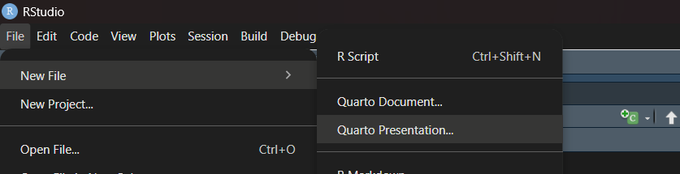
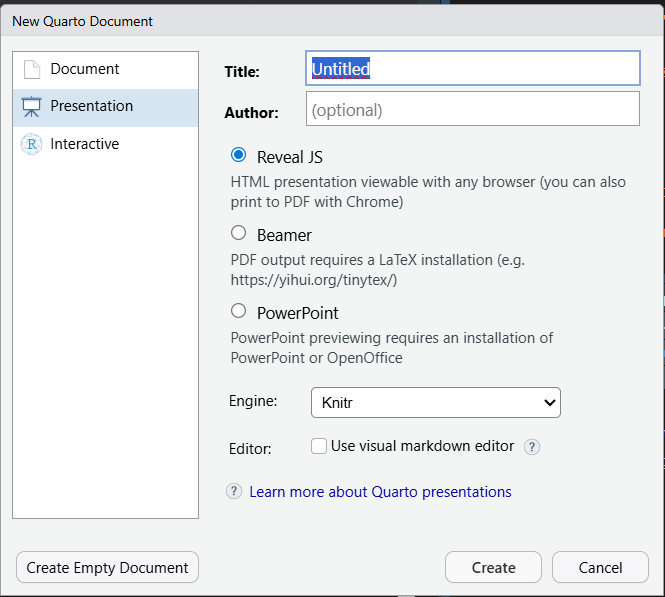

Código
install.packages("tinytex")
tinytex::install_tinytex()Primeiramente pensamos: O que é Quarto? Apesar do nome confuso (e até engraçado), o Quarto nada mais é do que um sistema de publicação científica e técnica de código aberto. Criado pelos mesmos desenvolvedores do RStudio, nele é possível elaborar documentos e apresentações dinâmicas, sites, livros e outros! Ele funciona como uma evolução do RMarkdown, com mais recursos e melhor integração com outras linguagens, como Python e Julia.

Neste tutorial, focaremos na parte de criação e desenvolvimento básico de apresentações em slides no Quarto dentro do RStudio.
install.packages("tinytex")
tinytex::install_tinytex()Instalar o Quarto e criar um documento semelhante a um arquivo ‘.r’.

Após isso, uma janela de novo documento se abre para definirmos algumas coisas sobre a apresentação, vamos destrincha-las:

Reavel JS: Gera slides em HTML, que abrem direto no navegador. Acabam sendo mais leves e bonitos.
Beamer: Gera slides em PDF, usando o LaTeX. Ótimo para quem gosta de um visual mais acadêmico ou precisa de PDF pronto para imprimir (precisa de LaTeX instalado).
PowerPoint: Cria slides no formato .pptx, compatível com PowerPoint ou LibreOffice.
Sobre as engines:
install.packages("rmarkdown")A opção “Use visual markdown editor” ativa o modo visual do RStudio — um editor parecido com o Word, onde você escreve e vê a formatação ao mesmo tempo. Se deixar desmarcado, você escreve em Markdown “puro” (com #, **negrito**, etc).
Nesse tutorial, usaremos o Reavel JS e a engine Knitr (com a opção do markdown editor desmarcada).
Assim como em um documento, nos slides no Quarto há um espaço delimitado para definirmos características que serão aplicadas para toda a apresentação - esse é o preâmbulo. E, normalmente, este já vem definido quando seguimos o passo a passo feito até aqui, porém podemos alterá-lo para estilizar certos aspectos da nossa apresentação.
A princípio, o preâmbulo de uma nova apresentação fica assim:
---
title: "Untitled"
format: revealjs
---Mas podemos brincar com as possibilidades do Quarto, como por exemplo definir temas, autores, textos de rodapé, logos… se quer adicionar algo globalmente a seus slides (para todos de uma vez) é no preâmbulo que você vai mexer.
---
title: "Trabalho Estatística III"
subtitle: "Regressão Linear"
author: "Livia Ribeiro"
format:
revealjs:
---E finalmente, o mais simples: os slides em si. No markdown, eles são separados por títulos de nível 1 e 2, ou seja, por # e ##.
Para melhorar a organização e refinar o conteúdo dos seus slides, o quarto dispõe de recursos interessantes.
Podemos separar o conteúdo em listas (tópicos) que podem aparecer de forma gradativa ou de uma vez na apresentação.
Na forma gradativa:
## Lista Incremental
::: {.incremental}
Lista de tópicos:
- Tópico um
- Tópico dois
:::De uma vez:
## Lista não incremental
Lista de tópicos:
- Tópico um
- Tópico dois
- E assim por dianteE há como acrescentar ao preâmbulo para que as listas sejam incrementais em todos os slides:
---
title: "Trabalho Estatística III"
subtitle: "Regressão Linear"
author: "Livia Ribeiro"
format:
revealjs:
incremental: true
---É possível criar múltiplas colunas em um único slide, definindo (ou não) o tamanho delas.
## Colunas
::: {.columns}
::: {.column width="40%"}
Coluna da esquerda
:::
::: {.column width="60%"}
Coluna da direita
:::
:::No Quarto, há 11 temas pré definidos para o design do seu slide, porém se quiser, você pode criar um próprio. Definimos um tema no preâmbulo, como visto anteriormente.
---
title: "Trabalho Estatística III"
subtitle: "Regressão Linear"
author: "Livia Ribeiro"
format:
revealjs:
theme: moon
---Os temas disponíveis no Quarto são:
Você pode ver mais a fundo sobre a criação de tema próprio no guia do Quarto.
Essas, quando usadas, vão ter cor mais clara e fonte menor em relação ao resto do texto, além de que vão estar localizadas nas bordas do slide.
## Nota simples
::: aside
Texto de rodapé.
:::## Nota enumerada
Exemplo ^[Esse texto vai ser exibido e enumerado na borda inferior do slide.]As duas podem ser usadas juntas.
Com o footer a nota de rodapé fica centralizada.
## Título do slide
::: footer
nota de rodapé centralizada
:::
O footer pode ser difinido no preâmbulo da apresentação, assim aparecerá em todos os slides.
---
format:
revealjs:
footer: "Texto de rodapé"
---Assim como em relatórios, você pode criar blocos de códigos no seu slide. Neles você pode:
Destacar linhas específicas (separadas por vírgula), intervalos (separados por hífen) ou ainda de maneira sucessiva, semelhante às listas incrementais (separados por uma barra |):
````{.r code-line-numbers="4,5"}
mu <- 0
sigma <- 1
x <- seq(-4, 4, length.out = 200)
# densidade da normal
y <- dnorm(x, mean = mu, sd = sigma)
````A altura de um bloco de código já é pré difinida em 500px, quando um bloco código ultrapassa esse limite, é adicionada uma barra de rolagem. Mas essa pode ser evitada se aumentamos o tamanho do bloco com code-block-height.
---
format:
revealjs:
code-block-height: 650px
---No Quarto é possível também criar um conjunto de abas na sua apresentação com os seguintes comandos:
::: {.panel-tabset}
### Aba A
Conteúdo da `Aba A`
### Aba B
Conteúdo da `Aba B`
:::Após criar seus slides no Quarto, uma dúvida comum é como compartilhá-los mantendo o visual e a configuração. No geral, três opções gratuitas e fáceis de usar são as mais populares:
GitHub: bom para quem já usa controle de versão
Netlify: permite publicar arrastando e soltando os arquivos
QuartoPub: serviço oficial do Quarto para fazer o deploy dos slides
Neste tutorial, vamos focar apenas no QuartoPub.
No QuartoPub podemos criar uma conta e disponibilizar nossas apresentações.
No terminal do Rstudio ou do seu computador rode o comando quarto publish quarto-pub nome_da_apresentacao.qmd. O Quarto vai pedir para você logar na sua conta e depois vai gerar um link público para sua apresentação. Assim, você pode seguir editando sua apresentação e quando quiser atualizar é só rodar o comando novamente no terminal - o link se mantém o mesmo.
Neste tutorial, vimos o essencial para criar apresentações de slides no Quarto, incluindo como configurar o arquivo, inserir código, adicionar imagens, formatar o conteúdo e personalizar os slides.
Embora tenhamos explorado apenas o básico, esses primeiros passos já permitem montar apresentações limpas, dinâmicas e integradas ao R de forma prática.
A partir daqui, você pode experimentar novos temas, transições, layouts e recursos extras do Quarto para deixar seus slides ainda mais completos e profissionais, mais informações estão disponíveis no Guia do Quarto
Seja para aulas, projetos acadêmicos ou apresentações técnicas, o Quarto oferece uma ferramenta poderosa e flexível — e com a vantagem de documentar código e resultados no mesmo ambiente.
Bons estudos e boas apresentações!
QUARTO. Presentations — Reveal.js. Disponível em: https://quarto.org/docs/presentations/revealjs/ . Acesso em: 1 nov. 2025.
MILZ, Beatriz. Tutorial: Introdução ao Quarto. 2022. Disponível em: https://beatrizmilz.github.io/2022-latinr-quarto-tutorial/index.html#/ . Acesso em: 1 nov. 2025.